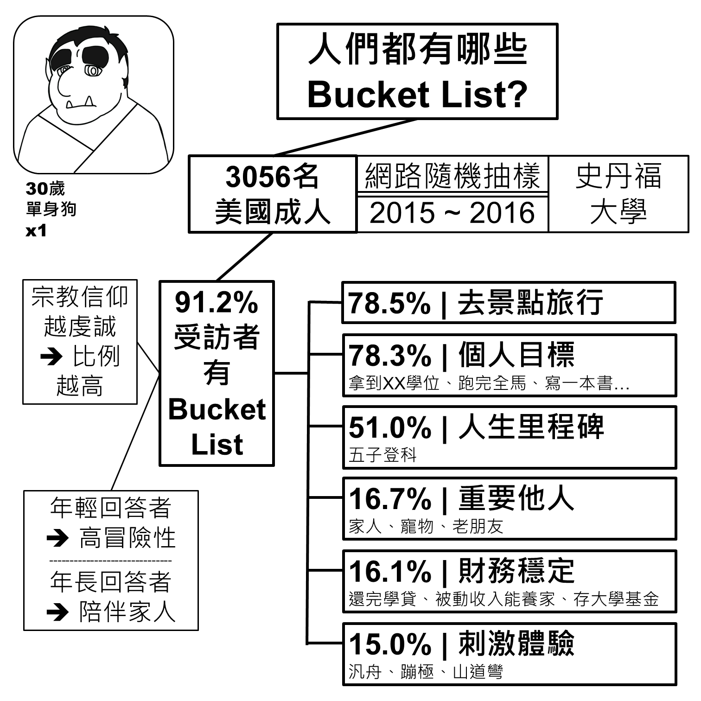
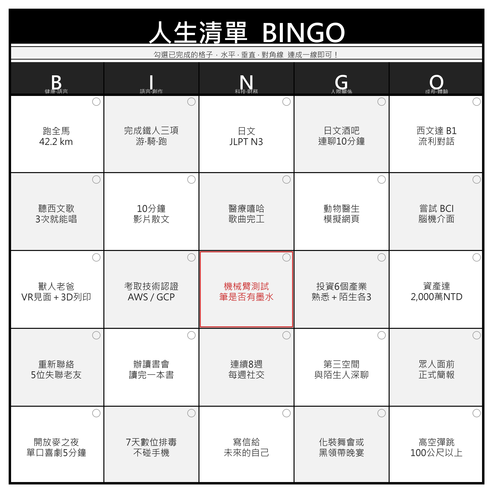

別人的人生清單
史丹福大學醫學院在 2015～2016 年做了一項研究，訪問了 3,056 名美國成人，了解大家的人生清單長什麼樣子。結果 91.2% 的受訪者都有自己的 Bucket List，而且信仰越虔誠、比例越高；年輕的回答者傾向填入高冒險性的項目，年長的回答者則更常寫下想陪伴家人的心願。
六大主題依比例排序：
- 78.5% ｜去景點旅行
- 78.3% ｜個人目標（拿到學位、跑完全馬、寫一本書……）
- 51.0% ｜人生里程碑（五子登科）
- 16.7% ｜重要他人（家人、寵物、老朋友）
- 16.1% ｜財務穩定（還完學貸、被動收入能養家、存大學基金）
- 15.0% ｜刺激體驗（泛舟、蹦極、山道彎）

資料來源：Periyakoil VS, et al. Common Items on a Bucket List. J Palliat Med. 2018;21(5):652–658. 閱讀原始研究 →
人生清單 BINGO
把清單濃縮成一張 5×5 的賓果卡，遊戲規則很簡單：勾選你已完成的格子，水平、垂直、對角線連成一線即可。

分類清單
已完成 0 / 0 項（0%）
點擊項目即可打勾，紀錄會保存在你目前使用的瀏覽器裡。
🏃 健康與體能
🗣️ 語言學習
🎨 創作計畫
🤖 科技與創新
💰 財務與 FIRE
🤝 人際關係
🌱 個人成長與克服恐懼
✨ 獨特與難忘的體驗
💡 這份清單是持續更新的活文件，隨著人生階段調整也很正常。重點不是全部完成，而是提醒自己：退休後的日子，除了「撫養萬歲」，也要留時間給「自己的消費」。